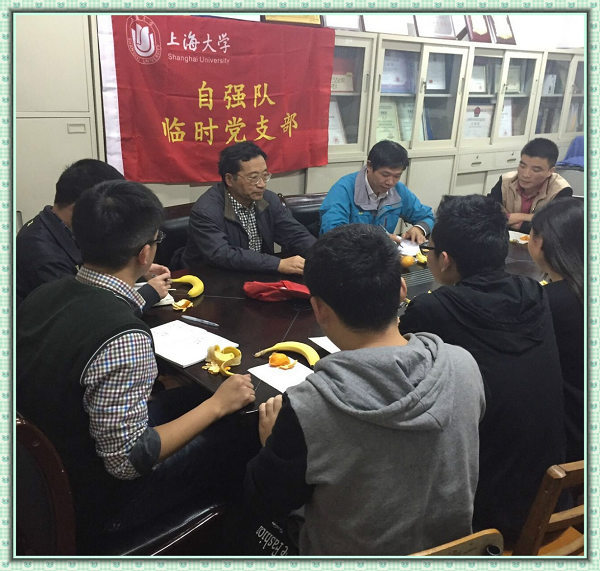

2015年11月10日晚七时，在延长校区西部自动化楼309室举行自强队临时党支部会议。出席此次会议的有自强队指导老师陈万米老师和黄慎之老师。
本次会议首先由陈万米老师对自强队本科生培养问题进行指导，强调了自强队应该注重在各项比赛以及平时学习中对本科生的重点培养。同时针对最近传销事件，陈万米老师提醒各位注意人身安全。最后，陈万米老师还对研究生的论文修改以及发表进行指导，也对2015“创造杯”大赛进行了动员。
黄慎之老师首先对自强队党支部的党建问题进行了指导，强调了党建问题与科创组织的紧密联系，号召我们积极的参与到自强队的组织建设中。最后，黄慎之老师进行了总结发言，动员在座的每一个人积极的为自强队这个大家庭而奋斗！
机自学院自强队
2015.11.10